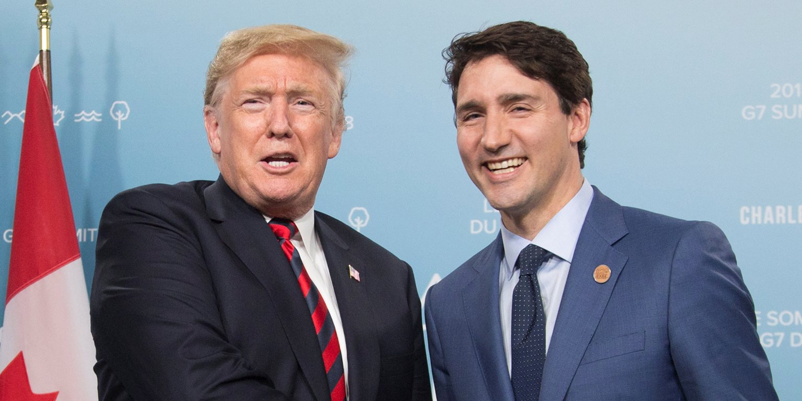

<!DOCTYPE HTML>
<html lang="pl">
<head>
  <meta charset="utf-8" />
  <title>Trump's new trade deal with Canada and Mexico is winning early praise</title>
  <meta name="description" content="REBRANDING NAFTA" />
  <meta name="keywords" content="TRUMP NAFTA" />
  <meta http-equiv="X-UA-Compatible" content="IE=edge">
  <link rel="stylesheet" href="main.css">
  </head>
</html>
<body>
  <div id="wrap">
    <h1>Trump's new trade deal with Canada and Mexico is winning early <abbr title="pochwała">praise</abbr></h1>
    <hr />
    <figure>
      
      <figcaption><p>
        <b>President Donald Trump and Canadian Prime Minister Justin Trudeau.</b>
      </p></figcaption>
    </figure>
    <p class="main_paragraph">
      Early reviews of President Donald Trump's new trade pact with Mexico and Canada are positive but cautious.<br /><br />
      The update of the North American Free Trade Agreement— agreed to late Sunday and rebranded as the US-Mexico-Canada Agreement,
       or <abbr title="United States-Mexico-Canada Agreement">USMCA</abbr> — came just hours before an artificial deadline set by the Trump administration.<br /><br />
      The refreshed version of NAFTA will include increased labor protections for workers, increased standards for <abbr title="bezcłowe przesyłki samochodowe">duty-free auto shipments</abbr>,
       increased access to the Canadian <abbr title="rynek mleczarski">dairy market</abbr> for US farmers, and a <abbr title="drobne zmiany">slight tweak</abbr> to the <abbr title="system rozstrzygania sporów">deal's dispute-resolution system.</abbr><br /><br />
      Most business and lobbying groups signaled approval of the USMCA, especially given Trump's <abbr title="zagrożenie, pogróżka, groźba">threat</abbr> to cut out Canada from the agreement.
       While the tone was upbeat, several groups cautioned that full support would come only after they <abbr title="przetrawią szczegóły techniczne umowy">digested the deal's technical details.</abbr><br /><br />
      Here are a few initial reactions from Washington and beyond:<br /><br />
    </p>
    <ul>
      <li>
        <b><abbr title="Amerykańska Izba Handlowa">US Chamber of Commerce:</abbr></b> "We welcome the announcement that negotiators have reached a deal to modernize NAFTA," said CEO Thomas Donohue. "We look forward to reviewing
        the details with our members to determine next steps, and we <abbr title="pochwalac">commend</abbr> the negotiators for their <abbr title="zaangażowanie">commitment</abbr> to finding a path forward that includes the US, Mexico, and Canada."
        </li>
      <li>
        <b><abbr title="Narodowe Stowarzyszenie Producentów:">National Association of Manufacturers:</abbr></b> "Manufacturers are extremely encouraged that our call for a trilateral agreement between the United States, Canada and Mexico has been answered," said Jay Timmons, the group's president and CEO. "Today, there's a massive amount of goods flowing across North America, meaning our countries' economies are inextricably linked. What's more, as the United States works to put an end to China's cheating and unfair trade practices, we are better off united with our North American allies."
        </li>
      </ul>

    </div>
  </body>
